Nernst-Planck Equation System¶
Git reference: Example newton-np-timedep-adapt-system.
Equation reference: The first version of the following derivation was published in: IPMC: recent progress in modeling, manufacturing, and new applications D. Pugal, S. J. Kim, K. J. Kim, and K. K. Leang Proc. SPIE 7642, (2010). The following Bibtex entry can be used for the reference:
@conference{pugal:76420U,
author = {D. Pugal and S. J. Kim and K. J. Kim and K. K. Leang},
editor = {Yoseph Bar-Cohen},
title = {IPMC: recent progress in modeling, manufacturing, and new applications},
publisher = {SPIE},
year = {2010},
journal = {Electroactive Polymer Actuators and Devices (EAPAD) 2010},
volume = {7642},
number = {1},
numpages = {10},
pages = {76420U},
location = {San Diego, CA, USA},
url = {http://link.aip.org/link/?PSI/7642/76420U/1},
doi = {10.1117/12.848281}
}
The example is concerned with the finite element solution of the Poisson and Nernst-Planck equation system. The Nernst-Planck equation is often used to describe the diffusion, convection, and migration of charged particles:
(1)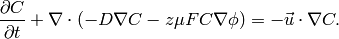
The second term on the left side is diffusion and the third term is
the migration that is directly related to the the local voltage
(often externally applied)  . The term on the right side is
convection. This is not considered in the current example. The variable
. The term on the right side is
convection. This is not considered in the current example. The variable
 is the concentration of the particles at any point of a domain
and this is the unknown of the equation.
is the concentration of the particles at any point of a domain
and this is the unknown of the equation.
One application for the equation is to calculate charge configuration
in ionic polymer transducers. Ionic polymer-metal composite is
for instance an electromechanical actuator which is basically a thin
polymer sheet that is coated with precious metal electrodes on both
sides. The polymer contains fixed anions and mobile cations such
as  , 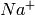 along with some kind of solvent, most often water.
, 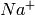 along with some kind of solvent, most often water.
When an voltage  is applied to the electrodes, the mobile cations
start to migrate whereas immobile anions remain attached to the polymer
backbone. This creates spatial charges, especially near the electrodes.
One way to describe this system is to solve Nernst-Planck equation
for mobile cations and use Poisson equation to describe the electric
field formation inside the polymer. The poisson equation is
is applied to the electrodes, the mobile cations
start to migrate whereas immobile anions remain attached to the polymer
backbone. This creates spatial charges, especially near the electrodes.
One way to describe this system is to solve Nernst-Planck equation
for mobile cations and use Poisson equation to describe the electric
field formation inside the polymer. The poisson equation is
(2)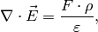
where  could be written as 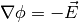 and
could be written as 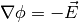 and  is
charge density,
is
charge density,  is the Faraday constant and
is the Faraday constant and  is dielectric
permittivity. The term could be written as:
is dielectric
permittivity. The term could be written as:
(3)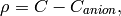
where 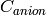 is a constant and equals anion concentration. Apparently for IPMC, the initial spatial concentration of anions and cations are equal. The inital configuration is shown:

The purploe dots are mobile cations. When a voltage is applied, the anions drift:

Images reference: IPMC: recent progress in modeling, manufacturing, and new applications D. Pugal, S. J. Kim, K. J. Kim, and K. K. Leang Proc. SPIE 7642, (2010) This eventually results in actuation (mostly bending) of the material (not considered in this section).
To solve equations (1) and (2) boundary conditions must be specified as well. When solving in 2D, just a cross section is considered. The boundaries are shown in:
For Nernst-Planck equation (1), all the boundaries have the same, insulation boundary conditions:
(4)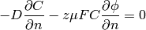
For Poisson equation:
- (positive voltage): Dirichlet boundary 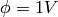. For some cases it might be necessary to use electric field strength as the boundary condtition. Then the Neumann boundary 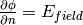 can be used.
- (ground): Dirichlet boundary 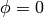.
- (insulation): Neumann boundary 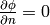.
Weak Form of the Equations¶
To implement the (1) and (2) in Hermes2D, the weak form must be derived. First of all let’s denote:
- 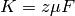
- 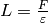
So equations (1) and (2) can be written:
(5)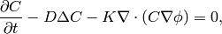
(6)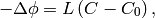
Then the boundary condition (4) becomes
(7)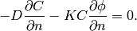
Weak form of equation (5) is:
(8)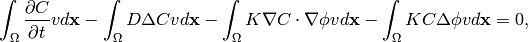
where  is a test function 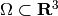. When applying
Green’s first identity to expand the terms that contain Laplacian
and adding the boundary condition (7), the (8)
becomes:
is a test function 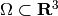. When applying
Green’s first identity to expand the terms that contain Laplacian
and adding the boundary condition (7), the (8)
becomes:
(9)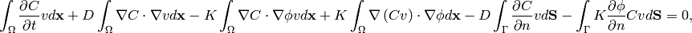
where the terms 5 and 6 equal  due to the boundary condition.
By expanding the nonlinear 4th term, the weak form becomes:
due to the boundary condition.
By expanding the nonlinear 4th term, the weak form becomes:
(10)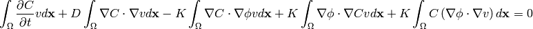
As the terms 3 and 4 are equal and cancel out, the final weak form of equation (5) is
(11)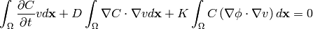
The weak form of equation (6) with test function  is:
is:
(12)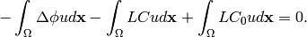
After expanding the Laplace’ terms, the equation becomes:
(13)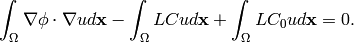
Notice, when electric field strength is used as a boundary condition, then the contribution of the corresponding surface integral must be added:
(14)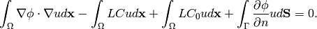
However, for the most cases we use only Poisson boundary conditions to set the voltage. Therefore the last term of (14) is omitted and (13) is used instead in the following sections.
Jacobian matrix¶
Equation (10) is time dependent, thus some time stepping method must be chosen. For simplicity we start with first order Euler implicit method
(15)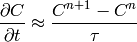
where  is the time step. We will use the following notation:
is the time step. We will use the following notation:
(16)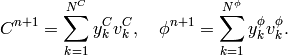
In the new notation, time-discretized equation (11) becomes:
(17)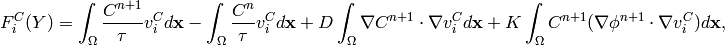
and equation (13) becomes:
(18)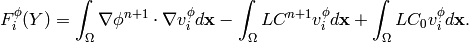
The Jacobian matrix 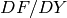 has 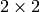 block structure, with blocks corresponding to
(19)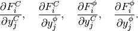
Taking the derivatives of  with respect to 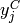 and 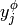, we get
with respect to 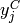 and 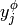, we get
(20)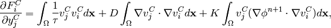
(21)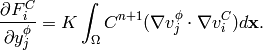
Taking the derivatives of 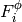 with respect to and , we get
(22)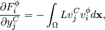
(23)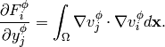
In Hermes, equations (17) and (18) are used to define the residuum , and
equations (20) - (23) to define the Jacobian matrix 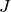.
It must be noted that in addition to the implicit Euler iteration Crank-Nicolson iteration is implemented
in the code (see the next section for the references of the source files).
Simulation¶
To begin with simulations in Hermes2D, the equations (17) - (23) were be implemented. It was done by implementing the callback functions found in newton-np-timedep-adapt-system/forms.cpp.
The functions along with the boundary conditions:
// Poisson takes Dirichlet and Neumann boundaries
BCType phi_bc_types(int marker) {
return (marker == SIDE_MARKER || (marker == TOP_MARKER && VOLT_BOUNDARY == 2))
? BC_NATURAL : BC_ESSENTIAL;
}
// Nernst-Planck takes Neumann boundaries
BCType C_bc_types(int marker) {
return BC_NATURAL;
}
// Diricleht Boundary conditions for Poisson equation.
scalar essential_bc_values(int ess_bdy_marker, double x, double y) {
return ess_bdy_marker == TOP_MARKER ? VOLTAGE : 0.0;
}
are assembled as follows:
// Add the bilinear and linear forms.
if (TIME_DISCR == 1) { // Implicit Euler.
wf.add_vector_form(0, callback(Fc_euler), H2D_ANY,
Tuple<MeshFunction*>(&C_prev_time, &C_prev_newton, &phi_prev_newton));
wf.add_vector_form(1, callback(Fphi_euler), H2D_ANY, Tuple<MeshFunction*>(&C_prev_newton, &phi_prev_newton));
wf.add_matrix_form(0, 0, callback(J_euler_DFcDYc), H2D_UNSYM, H2D_ANY, &phi_prev_newton);
wf.add_matrix_form(0, 1, callback(J_euler_DFcDYphi), H2D_UNSYM, H2D_ANY, &C_prev_newton);
wf.add_matrix_form(1, 0, callback(J_euler_DFphiDYc), H2D_UNSYM);
wf.add_matrix_form(1, 1, callback(J_euler_DFphiDYphi), H2D_UNSYM);
} else {
wf.add_vector_form(0, callback(Fc_cranic), H2D_ANY,
Tuple<MeshFunction*>(&C_prev_time, &C_prev_newton, &phi_prev_newton, &phi_prev_time));
wf.add_vector_form(1, callback(Fphi_cranic), H2D_ANY, Tuple<MeshFunction*>(&C_prev_newton, &phi_prev_newton));
wf.add_matrix_form(0, 0, callback(J_cranic_DFcDYc), H2D_UNSYM, H2D_ANY, Tuple<MeshFunction*>(&phi_prev_newton, &phi_prev_time));
wf.add_matrix_form(0, 1, callback(J_cranic_DFcDYphi), H2D_UNSYM, H2D_ANY, Tuple<MeshFunction*>(&C_prev_newton, &C_prev_time));
wf.add_matrix_form(1, 0, callback(J_cranic_DFphiDYc), H2D_UNSYM);
wf.add_matrix_form(1, 1, callback(J_cranic_DFphiDYphi), H2D_UNSYM);
}
where the variables C_prev_time, C_prev_newton,
phi_prev_time, and phi_prev_newton are solutions of concentration
and voltage . The suffixes newton and time are current iteration and previous
time step, respectively.
When it comes to meshing, it should be considered that the gradient of near the boundaries will
be higher than gradients of . This allows us to create different meshes for those variables. In
main.cpp.
the following code in the main() function enables multimeshing
// Spaces for concentration and the voltage.
H1Space C(&Cmesh, C_bc_types, C_essential_bc_values, P_INIT);
H1Space phi(MULTIMESH ? &phimesh : &Cmesh, phi_bc_types, phi_essential_bc_values, P_INIT);
When MULTIMESH is defined in main.cpp. then different H1Spaces for phi and C are created. It must be noted that when adaptivity is not used, the multimeshing in this example does not have any advantage, however, when adaptivity is turned on, then mesh for H1Space C is refined much more than for phi.
Non adaptive solution¶
The following figure shows the calculated concentration inside the IPMC.

As it can be seen, the concentration is rather uniform in the middle of domain. In fact, most of the concentration gradient is near the electrodes, within 5...10% of the total thickness. That is why the refinement
The voltage inside the IPMC forms as follows:

Here we see that the voltage gradient is smaller and more uniform near the boundaries than it is for .
That is where the adaptive multimeshing can become useful.
Adaptive solution¶
To be added soon.